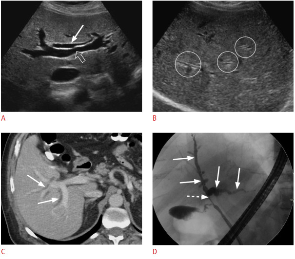
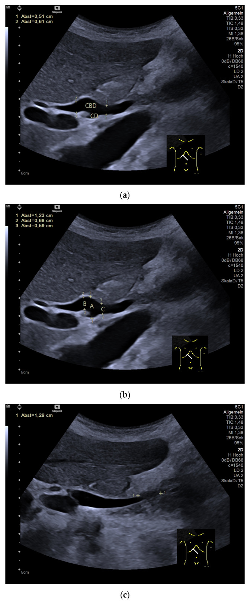

主訴流程
Jaundice ｜ 黃疸 · Jaundice 筆記更新 2026-07-28· 整理狀態：可用
加入閱讀清單 其他名稱 4 Jaundice · 黃疸 · Hyperbilirubinemia · 高膽紅素血症
一句話總覽
黃疸的第一刀永遠不是部位，而是分型 ：conjugated（direct）還是 unconjugated（indirect）。切完這一刀，一半的鑑別診斷當場消失；第二刀才輪到「肝前、肝內、肝後」。最怕的是急性膽管炎（要減壓，不是只給抗生素）與急性肝衰竭（要打電話給移植中心）。
Can't-miss — 漏掉會死人
這一格永遠先讀。沒排除完不准往下走。
不能漏
一眼線索
立刻做什麼排除
Acute cholangitis↗ 急性膽管炎Charcot 三徵：發燒＋黃疸＋RUQ 痛 （特異度 ~96%，但敏感度只有 ~26%——三徵不齊絕不能排除 ）；再加低血壓＋意識改變＝Reynolds 五徵 （敗血症）血液培養×2、T-bil/D-bil、ALP、Abdominal ultrasound↗ 看膽管擴張 → 抗生素＋緊急膽道減壓
急性肝衰竭 Acute liver failure
黃疸＋意識改變／asterixis、出血傾向、低血糖
PT/INR、ammonia、血糖 ；INR ≥1.5 ＋ 肝性腦病變且無慢性肝病 → 聯絡移植中心
Acetaminophen 中毒
大量服藥史、AST/ALT 破千且快速下降
Acetaminophen level ＋ Rumack-Matthew nomogram；高度懷疑時先給 NAC，不要等報告
猛爆型 Wilson disease↗
年輕人、Coombs 陰性溶血、ALP／T-bil < 4 、AST/ALT > 2.2
Ceruloplasmin、24 小時尿銅、裂隙燈找 K-F ring
大量溶血
Hb 快速下降、LDH↑、haptoglobin↓、indirect 為主
CBC/DC、reticulocyte、peripheral smear、Coombs（見 Anemia ）
三徵不齊 ≠ 不是膽管炎
Charcot 三徵敏感度僅約 26%，四分之三的急性膽管炎不會三項到齊。要用 TG18 三軸 ：A 全身發炎 （發燒／寒顫、WBC 或 CRP 異常）、B 膽汁鬱積 （黃疸、肝功能異常）、C 影像 （膽管擴張或病因證據）。A ＋（B 或 C 之一）＝疑似；A ＋ B ＋ C ＝確診 。疑似就該開抗生素並安排減壓，不要等三徵。
到床邊的前 5 分鐘
看 ：Vital signs（體溫、血壓 ）、意識與 asterixis、自然光下的鞏膜、慢性肝病 stigmata（蜘蛛痣、腹水、肝掌）。
問 ：小便顏色變濃、大便顏色變淡了嗎 ？有沒有發燒＋右上腹痛 ？最近兩個月新加了什麼藥 （含中草藥、保健食品）？
做 ：T-bil ＋ D-bil 、AST/ALT/ALP/γ-GT、PT/INR ＋ albumin 、CBC/DC、血糖、U/A、Abdominal ultrasound↗ 。
鑑別架構圖
先看骨架再看細節。這張圖回答「可能性從哪幾個分支長出來」，不是「先做什麼再做什麼」。第一層分岔就是 direct／indirect。⚠ ＝ can't-miss。
flowchart LR
C(["Jaundice 黃疸<br/>先分 direct / indirect"])
C --> PRE["Prehepatic<br/>未結合型為主"]
C --> IH["Intrahepatic<br/>肝細胞性"]
C --> POST["Posthepatic<br/>阻塞・膽汁鬱積"]
PRE --> PRE1["⚠ 溶血・無效造血<br/>血腫再吸收"]
PRE --> PRE2["Gilbert<br/>Crigler-Najjar I / II"]
IH --> IH1["⚠ 病毒性肝炎・藥物性肝損傷<br/>酒精性・缺血性肝炎"]
IH --> IH2["⚠ Wilson・自體免疫肝炎<br/>敗血症膽汁鬱積・Cirrhosis"]
IH --> IH3["Dubin-Johnson・Rotor"]
POST --> PO1["⚠ CBD stone<br/>Acute cholangitis"]
POST --> PO2["胰頭癌・膽管癌<br/>外壓・術後膽道狹窄"]
classDef hub fill:#263238,stroke:#000,color:#fff,font-weight:bold
classDef sys fill:#eceff1,stroke:#607d8b,color:#263238,font-weight:bold
classDef leaf fill:#f5f5f5,stroke:#9e9e9e,color:#263238
class C hub
class PRE,IH,POST sys
class PRE1,PRE2,IH1,IH2,IH3,PO1,PO2 leaf
筆記中的流程與關係 床邊最快的分流：驗尿
Unconjugated bilirubin 與 albumin 緊密結合、不被腎絲球過濾，尿液膽紅素必為陰性 ；所以尿驗出膽紅素＝conjugated 上升 。但「茶色尿」有兩種：膽紅素尿（conjugated）與血紅素尿（溶血），兩者都讓尿變深、指向的分支卻完全相反 ——不能只憑病人口述的顏色下結論，要驗。
病史 History
黃疸的病史重點是「時序」與「暴露」：什麼時候開始黃的、黃之前發生了什麼事。
問題
若為「是」→ 想到
發燒 ＋ 右上腹痛 ＋ 黃疸？
Acute cholangitis↗ （Charcot 三徵）→ 見 RUQ pain 、Fever
小便變濃茶色、大便變灰白 ？
Conjugated／阻塞性：CBD stone↗ 、Pancreatic cancer 、膽管癌
不痛 的黃疸 ＋ 體重減輕 ＋ 食慾差？惡性阻塞（胰頭癌、膽管癌）——無痛是警訊，不是安慰
最近兩個月新加什麼藥？含中草藥、保健食品、減肥產品 ；有沒有一次吃大量止痛藥？
藥物性肝損傷（DILI）、acetaminophen 中毒；抗結核藥與 amoxicillin-clavulanate 要特別警覺
每天喝多少酒、喝多久？
酒精性肝炎；也是 Cirrhosis 的背景
近期低血壓、大出血、心衰竭發作？
缺血性肝炎（shock liver）→ Shock
禁食、感染、手術、劇烈運動後才黃，以前也有過幾次？ Gilbert syndrome
生食貝類、東南亞旅遊、同事群聚？輸血、共用針具、刺青？
急性 A 型（孕婦＋南亞或未熟豬肉 → E 型）；Hepatitis B↗ 、Hepatitis C↗
年輕人 ＋ 動作障礙或精神症狀，且病毒標記陰性？
Wilson disease↗
意識改變、日夜顛倒？
Hepatic encephalopathy ／急性肝衰竭（也見 Delirium ）
一定不能漏問 ：完整用藥史（處方藥、中草藥、保健食品，逐項點名問）、酒精量、TOCC、B/C 肝與家族肝癌史、過去腹部與膽道手術、輸血史。
理學檢查 PE
要做的 PE
陽性代表
自然光下看鞏膜 （不要在黃光病房判斷）T-bil 約 > 2–3 mg/dL 才看得出來；鞏膜比皮膚早黃
體溫 ＋ 血壓 ＋ 意識
發燒＋黃疸＋RUQ 痛＝Charcot 三徵；再加低血壓＋意識改變＝Reynolds 五徵 → Shock
Murphy's sign
Acute cholecystitis↗
Courvoisier's sign ：無痛、可觸及的腫大膽囊遠端膽道惡性 阻塞（Pancreatic cancer 、膽管癌）；結石造成的阻塞多因膽囊纖維化而摸不到
Asterixis 撲翼樣震顫 Hepatic encephalopathy → 立刻查 INR，往急性肝衰竭想
慢性肝病 stigmata：蜘蛛痣、肝掌、男性女乳、腹水、caput medusae
Cirrhosis （併 Ascitic fluid analysis ）
肝脾腫大；全身抓痕
肝：肝炎、腫瘤浸潤、鬱血肝｜脾：門脈高壓或慢性溶血｜抓痕：慢性膽汁鬱積的搔癢
結膜蒼白、心搏過速
溶血或出血 → Anemia
裂隙燈找 Kayser-Fleischer ring
Wilson disease↗ （有神經症狀者幾乎 100%，純肝表現者約半數）
第一批檢查 Initial Workup
時機
檢查
想回答的問題
立刻
T-bil ＋ D-bil 第一刀 ：conjugated 還是 unconjugated
立刻
AST／ALT／ALP／γ-GT
第二刀 ：肝細胞性還是膽汁鬱積型
立刻
PT/INR ＋ albumin 肝的合成功能；INR 是急性肝衰竭的分界，不是湊數項目
立刻
CBC/DC、reticulocyte、LDH、haptoglobin、peripheral smear、Coombs
有沒有溶血（Anemia ）
立刻
U/A（尿膽紅素）、血糖、ammonia、電解質；有發燒或低血壓時加血液培養 ×2 ＋ lactate
床邊分型；急性肝衰竭會低血糖 ；腦病變程度；Acute cholangitis↗ 與敗血症
立刻
Abdominal ultrasound↗ 膽管有沒有擴張 ——內外科的分水嶺
次要
病毒標記組合（見下表）
找病因
次要
Acetaminophen level、ANA／ASMA／IgG、ceruloplasmin ＋ 24 小時尿銅
藥物、自體免疫肝炎、Wilson disease↗
次要
MRCP／CT／EUS，必要時 ERCP↗ ；amylase／lipase
膽管擴張後定位阻塞點（ERCP 主要是治療性的，不是第一線診斷工具 ）；併發 Acute pancreatitis
分型：肝細胞性 vs 膽汁鬱積型
肝細胞性 hepatocellular
膽汁鬱積型 cholestatic
主升的項目
AST／ALT （可破千），ALP 幾乎不動ALP ／ γ-GT ，transaminase 只輕度上升
典型病因
病毒性肝炎、藥物、缺血性肝炎、自體免疫肝炎、Wilson disease↗
CBD stone↗ 、Acute cholangitis↗ 、胰頭癌、膽管癌、藥物性膽汁鬱積、敗血症
下一步
病毒標記 ＋ 自體免疫 ＋ 銅代謝
Abdominal ultrasound↗ 看膽管擴張 → MRCP／ERCP↗
R value ＝（ALT／ALT ULN）÷（ALP／ALP ULN）：R ≥ 5 肝細胞型、R ≤ 2 膽汁鬱積型、2 < R < 5 混合型 （邊界值 5 與 2 分別歸給肝細胞型與膽汁鬱積型，不歸混合型 ）。一個數字就決定你下一批是驗病毒還是照超音波。肝細胞型那一支的完整流程 ——嚴重度分層（severe ALI vs ALF）、ALT 破千的鑑別、非肝來源的排除——在 Acute liver injury 。
ALP 高不等於膽道問題
ALP 也來自骨骼、胎盤、腸道 。看到 ALP 上升要先加驗 γ-GT ：
γ-GT 同步上升 → 肝膽來源 ；γ-GT 正常 → 往骨骼想 （骨轉移、Paget's disease、骨折癒合、維生素 D 缺乏），此時要一併看鈣、磷，見 Hypercalcemia 。
孕婦（胎盤型）與青春期生長期的 ALP 生理性上升，不要當成病。
AST／ALT 的比值也在講故事
ALT > AST → 病毒性、脂肪肝早期（MASLD ）｜AST／ALT > 2 且兩者多在 300 以下 → 酒精性
兩者同時破千且快速下降 → 缺血性肝炎或 acetaminophen｜ALT 破千 ＋ ALP 低到不合理 ＋ ALP／T-bil < 4 ＋ Coombs 陰性溶血 → 猛爆型 Wilson disease↗
急性肝炎：先分型，再選標記
想抓的病
開什麼
為什麼是這個標記
急性 A 型肝炎
anti-HAV IgM 總 anti-HAV 分不出感染期或疫苗；IgM 才代表急性
急性 B 型肝炎
HBsAg ＋ anti-HBc IgM HBsAg 抓現症病毒；anti-HBc IgM 抓急性期與空窗期
B 肝的背景資料
anti-HBs（保護力／疫苗）、HBeAg 或 HBV DNA（複製活性）
回答的是另一個問題，不是這次黃疸的病因診斷
急慢性 C 型肝炎
anti-HCV ＋ HCV RNA anti-HCV 有 8–12 週 空窗（免疫抑制者更久），而 HCV RNA 暴露後 1–2 週就驗得到 ；抗體陽性不分現症或已清除 → 要 RNA 才算數
急性 E 型肝炎
anti-HEV IgM 孕婦、未熟豬肉、東南亞／南亞旅遊；孕婦猛爆風險高
為什麼「只驗 HBsAg 陰性」不能說不是 B 肝
急性 B 肝有一段 window period ：HBsAg 已經消失、anti-HBs 還沒出現，這時候唯一陽性的標記是 anti-HBc IgM 。而若只驗「總 anti-HBc」也一樣失效——總 anti-HBc 陽性只代表「這輩子接觸過 HBV」，不分現在有沒有在發作。通則：每個標記各自回答一個問句 ——HBsAg＝現在有沒有病毒；anti-HBs＝有沒有保護力；anti-HBc IgM＝是不是急性或空窗；總 anti-HBc＝這輩子碰過沒；HBeAg／HBV DNA＝複製活不活躍。配錯問句，驗了也等於沒驗。
肝內膽管擴張：parallel channel／shotgun sign
CBD 長軸量測


左：擴張的肝內膽管（實心箭頭／圈）與門靜脈分支（空心箭頭）平行，形成 parallel-channel sign。右：CBD 應在長軸、避開 cystic duct 匯入口，取內壁到內壁的前後徑；同一膽管在不同位置量可差很多。一般 CD／CBD ≥7 mm 需結合年齡、症狀與肝膽指數追查；高齡或膽囊切除後可較寬。超音波看到膽管擴張卻沒看到原因，不能排除 distal CBD stone 或腫瘤，下一步常需 MRCP／EUS。Sources: Ultrasonographic evaluation of patients with abnormal liver function tests , Fig. 3；Ultrasound of bile ducts—reference values and measurement technique , Fig. 3。
鑑別診斷
完整清單，依「致命 → 常見 → 少見但要想到」分層。頂部的 can't-miss 是這張表第一層的濃縮。
致命（can't-miss）
疾病
支持線索
排除方法
Acute cholangitis↗ Charcot 三徵／Reynolds 五徵、ALP↑、膽管擴張
血培養、腹超；治療＝抗生素 ＋ 膽道減壓
急性肝衰竭（含 acetaminophen）
黃疸 ＋ 意識改變、INR ≥ 1.5、低血糖
INR、ammonia、acetaminophen level；聯絡移植中心
猛爆型 Wilson disease↗
年輕、Coombs 陰性溶血、ALP／T-bil < 4、AST/ALT > 2.2
Ceruloplasmin、24 小時尿銅、裂隙燈；治療是肝移植
缺血性肝炎（shock liver）
低血壓事件後 transaminase 破千且快速回落
治血行動力學原因（Shock ）
大量溶血
Hb 快掉、LDH↑、haptoglobin↓、indirect 為主
Smear、Coombs、Anemia
敗血症相關膽汁鬱積
direct↑ 但膽管不擴張 、感染源在肝外找感染源（Pneumonia 、腹腔內感染）；治感染而不是治肝
常見
疾病
支持線索
排除方法
急性病毒性肝炎（Hepatitis A↗ ／Hepatitis B↗ ／Hepatitis C↗ ）
ALT > AST 且可破千、ALP 幾乎不動
病毒標記組合（見上表）→ Acute hepatitis↗
藥物性肝損傷 DILI
用藥時序吻合、停藥後改善
完整用藥史 ＋ 分型；見下節
酒精性肝炎
AST／ALT > 2 且多 < 300、γ-GT↑、MCV↑
飲酒史 ＋ 排除其他原因
CBD stone↗ 陣發性 RUQ 痛、ALP 與膽紅素起伏
腹超 → MRCP／ERCP↗
Cirrhosis 失代償慢性肝病 stigmata、腹水、脾腫、血小板低
超音波、Ascitic fluid analysis
Gilbert syndrome
禁食／壓力後輕度 indirect↑，其餘肝功能全正常
不需侵入性檢查，追蹤即可
少見但要想到
疾病
支持線索
排除方法
Pancreatic cancer （頭部）／膽管癌無痛性黃疸 、體重減輕、Courvoisier's sign腹超 → CT／MRCP／EUS 切片
自體免疫肝炎
年輕女性、高球蛋白、ANA／ASMA 陽性
自體抗體 ＋ 肝切片
PBC／PSC
慢性搔癢、ALP 長期偏高；PBC 抗粒線體抗體陽性
AMA、MRCP
Liver abscess↗ 、肝腫瘤浸潤高燒、肝壓痛、糖尿病；或已知惡性腫瘤
腹超／CT
妊娠相關：肝內膽汁鬱積、HELLP、AFLP
孕期、搔癢、血小板低、低血糖
產科急會診
先天性高膽紅素血症：用「年齡＋分型」兩刀切完
疾病
分型
發病年齡／情境
關鍵一句
Gilbert syndrome Unconjugated
青少年至成年；禁食、感染、手術、脫水、劇烈運動、壓力 誘發
最常見（盛行率隨族群與診斷標準不同，報告落在 3–10% ）且完全良性；UGT1A1 活性約降至正常的 30%；T-bil 平時多 < 3 mg/dL，但禁食／生病時可升到 4–6 mg/dL——超過 3 不等於排除 Gilbert 。臨床意義主要在藥物代謝：irinotecan（SN-38 清除變慢、毒性↑）、atazanavir；也會加重新生兒黃疸、常被誤當肝病反覆檢查。台灣／東亞的致病變異以 UGT1A1*6（G71R）為主，不是白種人常見的 UGT1A1*28（TA）7 啟動子插入
Crigler-Najjar type I Unconjugated
新生兒期 發病，T-bil 常 20–45 mg/dL、核黃疸UGT1A1 幾乎完全缺失，需終身照光甚至肝移植。成人首次出現黃疸可以直接排除它
Crigler-Najjar type II （Arias）Unconjugated
可活到成年，T-bil 多 6–20 mg/dL
部分缺失，phenobarbital 可使膽紅素下降 > 25%（type I 完全無反應） ——這個藥物試驗就是分界；重病、禁食、麻醉等壓力下仍有核黃疸風險
Dubin-Johnson syndrome Conjugated 成年；懷孕或口服避孕藥時可能顯現
肝呈黑色 （類黑色素沉積）；尿總 coproporphyrin 正常 ，但 isomer I 佔比升到 ~80–90%（正常約 25%）。良性、不需治療
Rotor syndrome Conjugated 成年
肝不黑 、組織學正常；尿總 coproporphyrin 升高 2.5–5 倍 ，isomer I 佔比約 65%（也升高，但低於 DJS）。良性、不需治療
Coproporphyrin 這一格怎麼記才不會寫反
看總量 ：Rotor 升高 2.5–5 倍 ，DJS 是正常的 ——總量才是兩者的分水嶺。
看 isomer I 佔比 ：兩者都升高，DJS（~80–90%）> Rotor（~65%）> 正常（~25%）——這一項只能分程度，不能二分。
這張表的用法是「兩刀」，不是「背五個病」
第一刀分型 ：unconjugated 只剩 Gilbert 與 Crigler-Najjar；conjugated 只剩 Dubin-Johnson 與 Rotor。
第二刀看年齡 ：酵素完全 缺失的在嬰兒期就發作（type I），部分 缺失的才能活到成年並被壓力誘發（Gilbert、type II）。年齡本身就是鑑別工具，不必記酵素活性的百分比。
藥物性肝損傷 DILI
內因性 intrinsic
特異體質性 idiosyncratic
與劑量的關係
劑量依賴、可預測 ，有明確中毒劑量與劑量關係弱、不可預測 ，取決於宿主（年齡、飲酒、NAT2 慢乙醯化型、既有肝病）
潛伏期
短，數小時至數天
數週至數月，變異大
代表藥
Acetaminophen 、四氯化碳、高劑量 methotrexate抗結核藥（INH） 、amoxicillin-clavulanate、phenytoin、halothane
處置
有解毒劑（NAC）
停掉可疑藥物並觀察 ；類固醇不是常規 ，但有明確適應症：切片有自體免疫特徵（DI-AIH）、免疫檢查點抑制劑肝炎 、TKI、DRESS → 短療程並快速減量
抗結核藥
肝毒性
招牌副作用
Isoniazid（INH）
高（特異體質性）
周邊神經病變 → 併服 vitamin B6（pyridoxine）；藥物性狼瘡
Rifampin（RIF）
中（多為膽汁鬱積型；也可單獨升高 unconjugated bilirubin）
體液橘紅色、流感樣症候群、強力 CYP450 誘導劑
Pyrazinamide（PZA）
高，且明確與劑量相關 （現行劑量下與 INH 誰最強仍有爭議——考題答「PZA 最高」）
高尿酸血症與痛風、關節痛
Ethambutol（EMB）
幾乎沒有
視神經炎、紅綠色盲 （定期查視力與色覺）；腎功能不良需調量
Streptomycin（SM）
幾乎沒有
耳毒性（第八對腦神經）、腎毒性；孕婦禁用
抗結核藥的停藥門檻——只看兩件事：倍數與症狀
情況
處置
ALT ≥ 3× ULN，且合併肝炎症狀（食慾不振、噁心、嘔吐、腹痛、無法解釋的倦怠）和／或黃疸 停藥 ，改用替代處方
ALT ≥ 5× ULN，即使完全無症狀 停藥
ALT 輕度上升、無症狀、bilirubin 正常
不停藥，密切追蹤肝功能
真的要停時，通常先停肝毒性最高的（INH、RIF、PZA），EMB、SM 這類幾乎不傷肝的可以留著 撐住抗結核治療。見 Tuberculosis↗ 。
Hy's law（四要素，缺一不算） ：① ALT 或 AST > 3× ULN ；② total bilirubin > 2× ULN ；③ 無膽汁鬱積證據 （ALP 未上升到 > 2× ULN）；④ 找不到其他能解釋的原因 （病毒性肝炎 A–E、既有或急性肝病、其他肝毒性藥物）。四項同時成立 → 死亡或需肝移植的機率 > 10% 。這是紅線，不是觀察區。
處置分流 Disposition
急性肝衰竭的定義——這是打電話給移植中心的分界
凝血功能異常（INR ≥ 1.5）＋ 肝性腦病變（Hepatic encephalopathy ），且病人「沒有慢性肝病／肝硬化」，病程 < 26 週。
三個條件缺一不可：沒有腦病變就不是急性肝衰竭，只是急性肝炎 ；有肝硬化底子的通常 不是 ALF，是急性慢性肝衰竭（ACLF）。
去向
條件
ICU
敗血性休克／Reynolds 五徵；急性肝衰竭（INR ≥ 1.5 ＋ 肝性腦病變）；活動性大量溶血合併血行動力學不穩
住院
急性膽管炎需膽道減壓；膽管擴張待 ERCP↗ ／MRCP；transaminase 破千或 INR 延長；無法進食脫水；懷疑猛爆型 Wilson
門診追蹤／回家
生命徵象穩定、意識清楚、INR 正常、膽管不擴張，且屬單純 indirect 上升而其餘肝功能全正常（如 Gilbert）
禁忌與陷阱
絕對不可
情境
絕對不可
為什麼
該做什麼
Acute cholangitis↗ 合併敗血症只給抗生素、不做膽道減壓 阻塞的膽道等於一個持續加壓的膿腔，抗生素進不去；不減壓死亡率極高
抗生素 ＋ 緊急膽道減壓 ：ERCP↗ 取石／放支架，失敗則 PTBD 或手術
任何新發黃疸
看到黃疸就當肝炎，只驗 AST／ALT 沒驗 direct／indirect 就是跳過第一刀，溶血與阻塞會被整個漏掉
T-bil ＋ D-bil ＋ ALP／γ-GT ＋ 腹超 ，同一批開完
急性肝衰竭／肝性腦病變
給 benzodiazepine 等鎮靜劑 肝臟代謝不掉、藥效延長，掩蓋腦病變分級並壓抑呼吸，惡化腦水腫
找誘因（感染、出血、電解質、低血糖）；躁動危及安全時以保護呼吸道為優先，見 Hepatic encephalopathy
[!warning] 常見錯誤
只驗 total bilirubin 不驗 direct ——第一刀沒切，後面全部是猜的。ALP 高就當膽道阻塞 ——沒加 γ-GT，會把骨轉移當肝病（見 Hypercalcemia ）。只驗 HBsAg 陰性就說不是 B 肝 ——空窗期唯一陽性的是 anti-HBc IgM；anti-HCV 陽性也不等於現症感染 ，要 HCV RNA。抗結核藥一有肝指數上升就全停 ——輕度、無症狀、膽紅素正常是追蹤，不是停藥；反過來，問用藥史只問處方藥 也會漏診：中草藥、保健食品、減肥產品是台灣 DILI 的大宗，要逐項點名問。超音波沒看到結石就排除阻塞 ——總膽管下段常被腸氣遮住；膽管擴張本身就是往下追的理由 。同理，無痛性黃疸當成肝炎追蹤三個月 ，就是胰頭癌與膽管癌被延誤的典型路徑。
相關連結